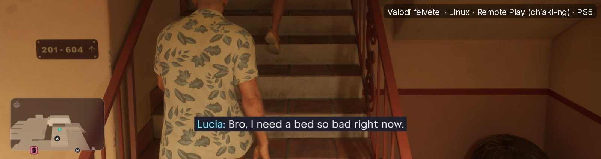
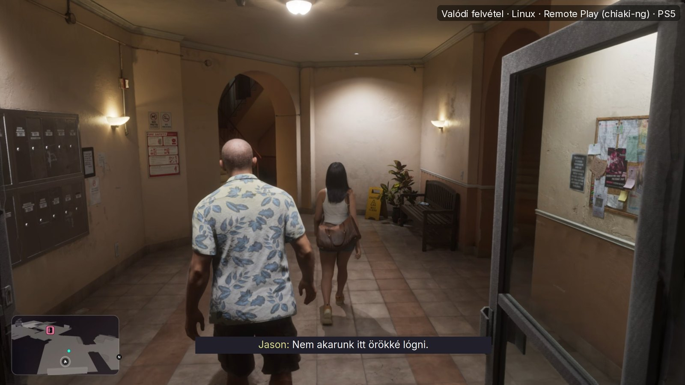
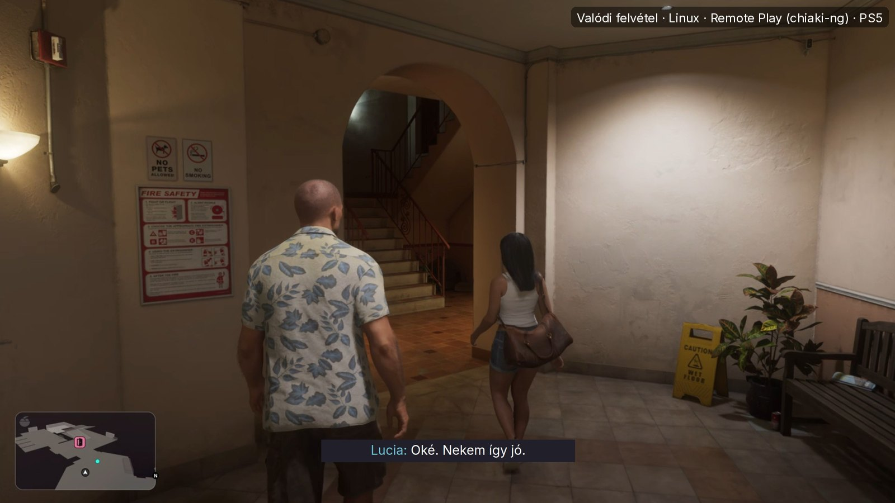
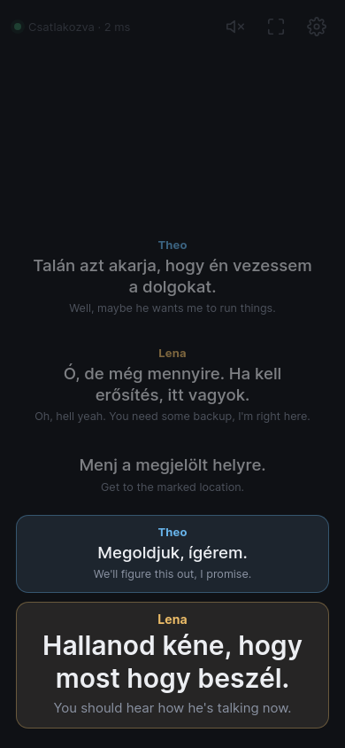
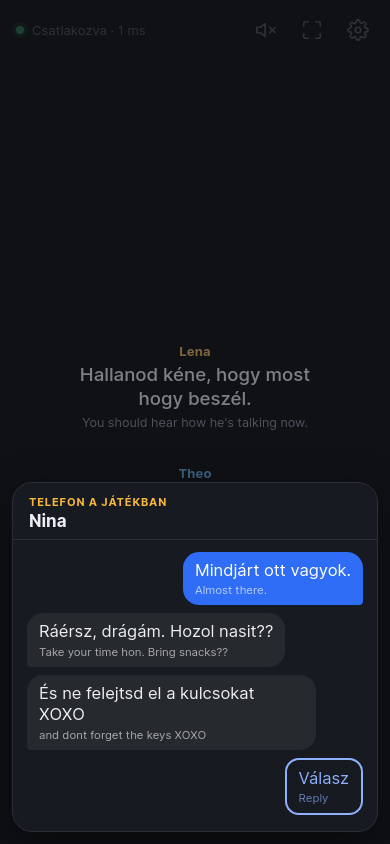

Ingyenes · nyílt forrású · offline isFree · open source · works offline
Játssz a tévén. Olvasd a fordítást a telefonodon.
Play on the TV. Read the translation on your phone.
A SubBridge élőben lefordítja a játékok feliratát, és ott mutatja, ahol kényelmes: a játék képén az eredeti felirat helyén, a monitor alá tett telefonodon, vagy mindkettőn. Bármilyen feliratos játékkal működik.
SubBridge translates game subtitles live and shows them where it suits you: on the game picture in place of the original, on your phone under the monitor, or both. Works with any game that has subtitles.
A fordítás pontosan az eredeti feliratdobozba kerül, ugyanolyan stílusban, a beszélő nevének eredeti színével. Húzd a csúszkát! A SubBridge csak olvassa a képet: a játékhoz és a Remote Play programhoz nem nyúl.
The translation goes exactly into the original subtitle box, same style, speaker name in its original colour. Drag the slider! SubBridge only reads the picture – it never touches the game or the Remote Play app.

ENHU
Valódi felvétel, nem látványterv.
Real footage, not a mock-up.
Linux, Remote Play (chiaki-ng), PS5 – a felirat élőben, a játék közben készült. Minden kép és videó a program valódi működését mutatja.
Linux, Remote Play (chiaki-ng), PS5 – recorded live while playing. Every picture and clip shows the app actually running.
Valódi felvétel · Linux · Remote Play (chiaki-ng) · PS5
Valódi felvétel · Linux · Remote Play · PS5

Linux · Remote Play · PS5

Linux · Remote Play · PS5


Beszélgetés a telefonodon.
The conversation, on your phone.
Minden beszélőnek saját színe van, a legújabb sor nagy, ami még látszik a játékban, az ki van emelve. Felolvasást is kérhetsz. Ha a karakter elővesz egy telefont, annak üzeneteit, posztjait és válaszgombjait is lefordítja. iPhone-on és bármilyen telefonon böngészőből fut, Androidra natív app is van.
A colour per speaker, the newest line large, lines still on screen highlighted, optional read-aloud. When the character pulls out a phone, its messages, posts and reply buttons are translated too. Runs in any phone browser (iPhone included); there is a native Android app as well.
Minden, ami kell.
Everything you need.
Profi eszköz, amit mégis bárki egy perc alatt beállít – egy háromlépéses varázsló végigvezet.
A pro tool that anyone sets up in a minute – a three-step wizard guides you.
Felirat a játék képén
Subtitles on the game
Az eredeti doboz helyén, csak amikor a játék van elöl.
In place of the original box, only while the game is in front.
Játékbeli telefon
In-game phone
Chatek, posztok, hírek és válaszgombok fordítása.
Chats, posts, news and reply buttons translated.
Capture card
Capture cards
Bármilyen USB-s HDMI-rögzítő. Játéknézet hanggal, ha nincs passthrough.
Any USB HDMI capture device. Game View with sound when there is no passthrough.
Fordítási zónák
Translation zones
Súgódobozok, feladatok, értesítések – külön területként.
Help boxes, objectives, notifications – each its own area.
Offline és ingyenes
Offline and free
Alapból a gépeden fordít. Kérhető DeepL, Google Cloud, LibreTranslate is.
Translates on your PC by default. DeepL, Google Cloud, LibreTranslate optional.
Gyors
Fast
A felirat megjelenésétől a telefonig jellemzően 0,2–0,4 másodperc.
Typically 0.2–0.4 s from subtitle to phone.
Ahogy neked kényelmes.
Whatever suits you.
Három bevált felállás – a programban részletes súgó vezet végig mindegyiken.
Three proven setups – the built-in help walks you through each.
Tévé + telefon
TV + phone
A tévén játszol a konzollal, a gépen a háttérben fut a Remote Play vagy egy capture card, a fordítást a telefonon olvasod.
Play on the TV with the console; Remote Play or a capture card runs in the background on the PC; read the translation on your phone.
Gépen, Remote Playjel
On the PC with Remote Play
A Remote Play ablakban a felirat helyén a fordítás jelenik meg. Nem kell semmi extra hardver.
The translation replaces the subtitle inside the Remote Play window. No extra hardware needed.
Capture carddal
With a capture card
HDMI-rögzítővel bármilyen konzolhoz. Passthrough nélküli kártyánál a beépített Játéknézetben játszol, hanggal.
An HDMI capture device works with any console. Without passthrough you play in the built-in Game View, with sound.
Letöltés
Download
Ingyenes és nyílt forrású (MIT). A telefonra nem kell app: olvasd be a QR-kódot. Ellenőrzőösszegek: SHA256SUMS.txt.
Free and open source (MIT). Phones need no app: just scan the QR code. Checksums: SHA256SUMS.txt.
Nincs fiók, nincs felhő, nincs telemetria. A képernyőkép soha nem hagyja el a gépet; online fordító választásakor csak a felirat szövege megy a választott szolgáltatáshoz, a saját kulcsoddal.
No account, no cloud, no telemetry. Screen images never leave your PC; with an online translator only the subtitle text goes to that service, with your own key.
 ENHU
ENHU